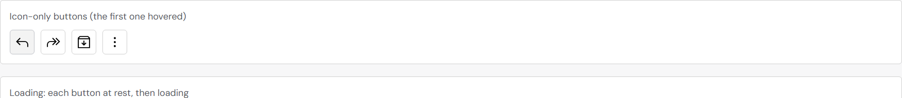
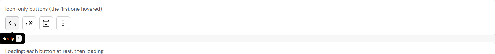
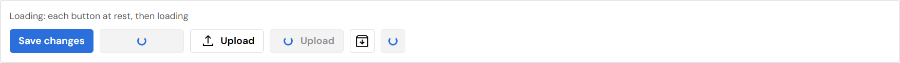
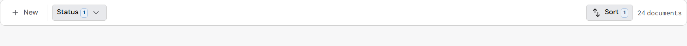
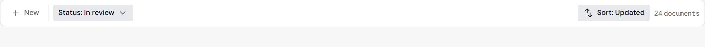

Button behaviors: before and after
Your choices from the study (2026-10-24), taken from Carbon, Atlassian, Apple, Material and Polaris. Photographed at 150% screen scale.
Icon-only buttons name themselves, with their shortcut
- Every icon-only button shows its name as a tooltip on hover, on keyboard focus and on a long press. Before, only the ones a page wrapped by hand did.
- A button given a shortcut shows its keys in the tooltip (Ctrl or ⌘ as the computer uses) and tells screen readers the shortcut.


Loading keeps the width and the name
Each pair is a button at rest, then loading. A button with words and no icon used to grow (109 → 137px wide) and was read as “Working Save changes”. Now the spinner sits over the words: same width, and it is still read as “Save changes”, busy.

Sort and Status show the current choice
A menu that picks a value now shows it in the button (Apple’s pop-up button): “Status: In review”, “Sort: Updated”, and “+1” when there is more than one. With nothing chosen the button reads just “Status” or “Sort”.


Touch: a 44px target even when a button looks smaller
On a touch screen every button already grows to 44px. Where a container keeps a button small (the app header, a dense row), its touch area now still reaches 44px around it, invisibly. Nothing changes with a mouse. The phone apps keep their own sizes (44pt on iPhone, 48dp on Android).
Still to come (after the command bar work in #274)
- Delete and other destructive commands in the command bar ask to confirm before they act. Destructive commands already come last, after a line.
- The bar re-fits as soon as a chosen value changes the length of “Status: …”.